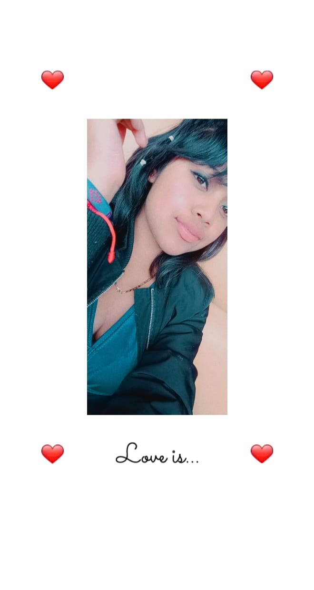

<!DOCTYPE html>
<html>
<head>
  <meta charset="utf-8">
<title>Keyli Lucrecia Noj Sen</title>
</head>
<body bgcolor="#F5D0A9">
<aside class="">

         <div style="text-decoration: : center; font-size: 15px; border: 2px solid red;background-color:#FFFF00 ;">
          <center></center>
          <h2 aling><center>Keyli Lucrecia Noj Sen</center></h2>
          <p aling><center>Direcciòn:Lote 13 Mz "A" villas de guadalupe zona 4 de villa nueva </center></p>
          <p><center>Email:nojsenk@gmail.com</center></p>  
          <p><center>Telefono:50-68-02-87</center></p>

         </br>
        </br>
        </br>
        </br>
        </br>
      </div>

<fieldset>
  <legend><h1><b><FONT COLOR="red">Datos personales</b></h1></FONT></legend>
<ul>
<li>Nacionalida: &nbsp; Guatemalteca</li>  
<li>Fecha de Nacimiento: &nbsp;EL 20 de agosto del 2003</li>
<li>Estado civil: &nbsp; soltera</li>
<li>DPI: &nbsp;12368952872</li>
</ul>

<h2>Actitudes</h2>
        <ul>
        <li>Trabajadora</li>
        <li>Honesta</li>
        <li>Responsable</li>
        </ul>

        <h2> Habilidades </h2>
            <ul>
            <li>Maquillista</li>
            <li>Cocinera</li>
            <li>bailarina</li>
            </ul>

            <h1>Sobre Mi</h1>
          <p>Yo soy keyli Lucrecia Noj Sen tengo 18 años,vivo en Guatemala con mi Familia estoy cursando mi ultimo año de Perito en Administraciòn de empresa Tambien soy muy social me gusta llevarme muy bien con las personas ,tengo un caracter un poco duro pero soy una buena persona me guta ayudar alos demas Tambien me encanta el maquillaje , y tambien el baile en el año 2017 al 2019 participe como batonista por parte de la escuela .Despues de mi carrera pienso seguir un doctorado ya que mi meta es salvar muchas vidas.</p>
         </fieldset>

          <fieldset>
 <legend><h2><b><FONT COLOR="red">Estudios Realizados</b></h2></FONT></legend>
          <ul>
  <li>Grado Academico:      Primaria   2011-2016 </li>
  <li>Nombre del Establecimiento:   Escuela Oficial Rural Colinas de Villa Nueva </li>
  <li>Grado Academico:     Basicos  2017-2019  2011-2016 </li>
  <li>Nombre del Establecimiento:   INEB 9 De Julio </li>
  <li>Grado Academico:      Diversificado   2020-2022</li>
  <li>Nombre del Establecimiento:   Istituto Profecional de Computaciòn </li>
</ul>

<h2>Tecnologicas</h2>
            <ul>
            <li>pseint</li>
            <li>Consola</li>
            <li>HTML</li>
            <li>java</li>
            </ul>
   </fieldset>

       <fieldset>
 <legend><h1><b><FONT COLOR="red">Redes Sociales</b></h1></FONT></legend> 
            <ul>
            <li>Numero De Telefono: 50-68-02-87</li>
            <li>Facebook:Keyli NOJ</li>
            <li>Instagram:KEYLI_@Noj</li>
            </ul>
         </fieldset>
        <fieldset>
 <legend><h2><b><FONT COLOR="red">Experiencia Laboral</b></h2></FONT></legend>
          <li>Procucción en Nestle</li>

          <h2>Referncias Personales</h2>
          <figure>
      
      <figcaption>yessenia chan</figcaption>
    </figure>
    <span>52121969</span>
    <span>Yessenia15@gmail.com</span>


    <figure>
      
      <figcaption>Maria celeste <RP>amirez Chilel</RP> </figcaption>
    </figure>
    <span>32764432</span>
    <span>MariaRa@gmail.com</span>


    <figure>
      
      <figcaption>Kenia Noj</figcaption>
    </figure>
    <span>53762578</span>
    <span>knoj@gmail.com</span>
       </fieldset>  
</aside>
<main>
</main>
</body
</html>

